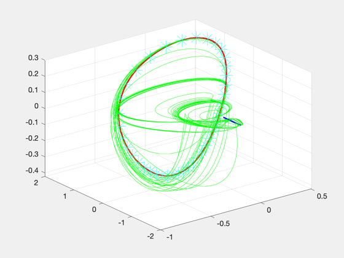

Compute several reconfiguation maneuvers of varying duration for an elliptical reference orbit.
Since version 7.
------------------------------------------------------------------------
Usage:
FFEccReconfigDemo;
------------------------------------------------------------------------
See also AC, Mag, UnwrapPhase, FFEccDiscreteHills, FFEccGoals,
FFEccProp, LPEccentric, NuDot, OrbRate, M2Nu, Period
------------------------------------------------------------------------
a = 12000;
inc = 45*pi/180;
lan = 30*pi/180;
per = 15*pi/180;
e = 0.3;
M = pi/2;
el = [a,inc,lan,per,e,M];
nu = M2Nu(e,M);
n = OrbRate(a);
T = Period(a);
dNu = NuDot(n,e,nu);
nS = 300;
D0 = FFEccGoals( e, -1, 0, 0, 0, 0 );
xH0 = FFEccProp( D0, nu, e );
xH0 = xH0.*[1;1;1;dNu*ones(3,1)];
D = FFEccGoals( e, 1, 0.5, pi/2, 0.25, pi/4 );
dT = linspace(1,3,40)*T;
N = length(dT);
cost = zeros(N,1);
MF = M+dT/T*2*pi;
nuF = UnwrapPhase( M2Nu(e,MF) )+2*pi;
xHM = cell(1,N);
hWB = waitbar(0,sprintf('Calling LPEccentric %d times, please wait...',N));
for i=1:N,
dNuF = NuDot(n,e,nuF(i));
xHF = FFEccProp( D, nuF(i), e );
xHF = xHF.*[1;1;1;dNuF*ones(3,1)];
[aC,t,flag] = LPEccentric( e, n, xH0, xHF, nu, nuF(i), nS );
if ~flag
fprintf('Solution for case %d (%2.2f orbits) not found.\n',i,dT(i)/T);
end
cost(i,1) = sum(Mag(aC).*diff(t))*1e3;
xHM{i} = FFEccDiscreteHills( e, n, xH0, nu, aC, t );
waitbar(i/N,hWB);
end
close(hWB);
phi = linspace(0,2*pi,100);
xH0 = FFEccProp( D0, phi, e );
xHD = FFEccProp( D, phi, e );
NewFig('Trajectory')
plot3( xH0(1,:), xH0(2,:), xH0(3,:), 'b', 'linewidth',2 ), hold on
plot3( xHD(1,:), xHD(2,:), xHD(3,:), 'r', 'linewidth',2 ), grid on, cameratoolbar('setmode','orbit');
k = 1:3:nS;
for i=1:N
plot3( xHM{i}(1,k), xHM{i}(2,k), xHM{i}(3,k), 'g' )
plot3( xHM{i}(1,end), xHM{i}(2,end), xHM{i}(3,end), 'c*','markersize',20 )
end
